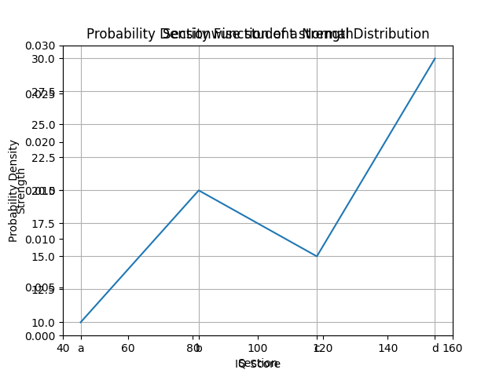
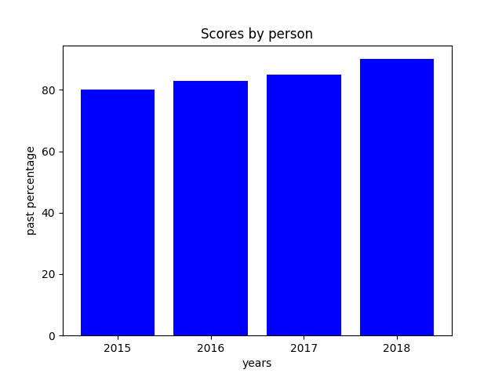
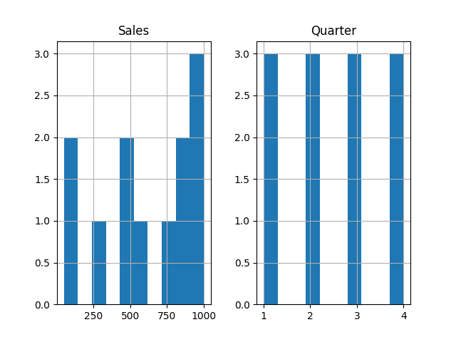
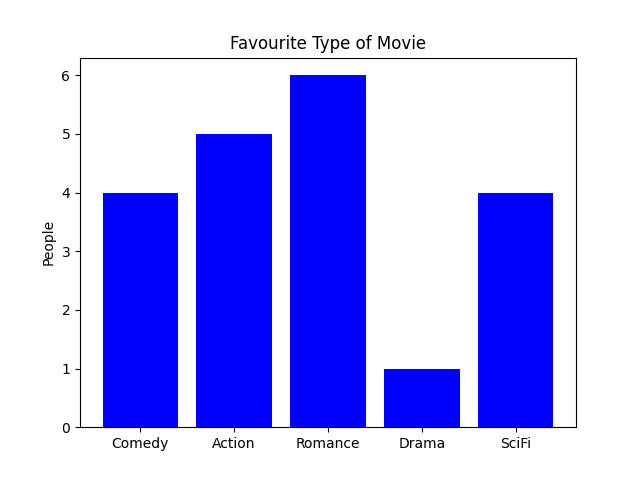
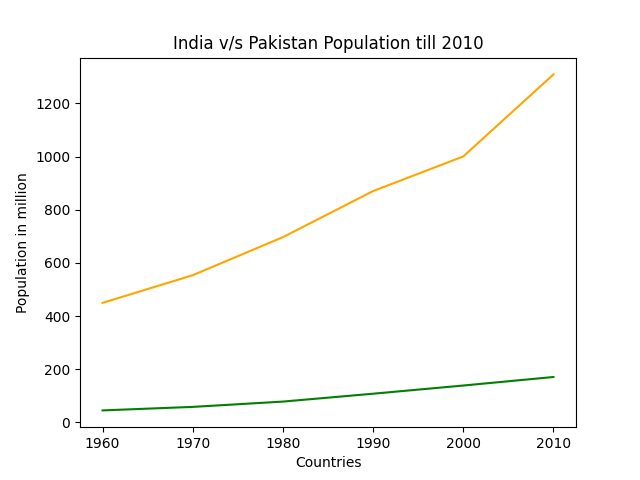
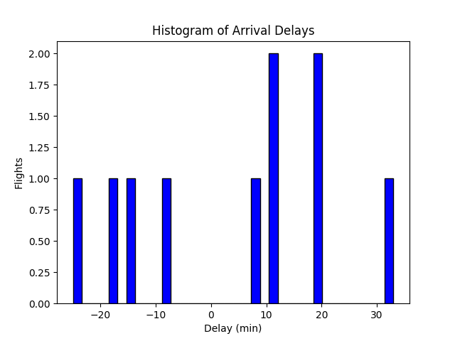

Class 12th Informatics Practices Practical File
- program-insertion_list-py
- program-permutations
- program-palindrome_checker-py
- program-quadratic_equation-py
- program-linear_search-py
- program-matrix_pyramid-py
- problem-statement
- program-list_minmax-py
- program-prime_number-py
- program-progress_bar-py
- program-salary_increaser-py
- program-matrix_multiplication-py
- program-sum_of_nnn-py
- program-update_names-py
- program-view_name-py
- program-read_write-py
- program-numpy-py
- program-frequency_marks-py
- program-multiple_plots-py
- program-memory_address-py
- program-numpy-functions-py
- program-multiple_views-py
- program-sqlconnect-py
- program-covariance_and_variance-py
- program-marks_calculate-py
- program-plot_sinewave-py
- program-hist1--py
- program-movie_pyplot--py
- program-population_pyplot--py
- program-csv_df1-py
- program-df_cricket-py
- program-df_iterr1-py
- program-flight_delay-py
- program-mysqlpyth5-py
- program-mysqlpyth6-py
Program: insertion_list .py
Code:
list=[10,1,5,0,6,8,7,3,11,4]
i=1
while(i<10):
element=list[i]
j=i
i=i+1
while(j>0 and list[j-1]>element):
list[j]=list[j-1]
j=j-1
list[j]=element
i=0
while(i<10):
print (list[i],end=' ')
i=i+1
Output
0 1 3 4 5 6 7 8 10 11
Program: Permutations
Code:
from itertools import permutations
def user():
l = []
n = int(input("Enter number of elements for list:"))
for i in range(n):
val = int(input("Enter your desired value:"))
l.append(val)
return l
list1 = user()
perm = permutations(list1)
a=0
# Print the obtained permutations
for i in list(perm):
print (i)
a+=1
print("The total size of list",a)
Program: Palindrome_checker .py
Code:
#Q8
string = input("Enter string to check palindrome: ")
rev = string[::-1]
if string == rev:
print("Yes it's a palindrome")
Program: Quadratic_equation .py
Code:
import cmath
def solve_quadratic(a, b, c):
d = (b**2) - (4*a*c)
if d > 0:
print("Real and Different Roots")
sol1 = (-b-cmath.sqrt(d))\(2*a)
sol2 = (-b+cmath.sqrt(d))\(2*a)
elif d == 0:
print("Real and Same Roots")
sol1 = sol2 = -b \ (2 * a)
else: # discriminant less than 0
print("Complex or Imaginary Roots")
sol1 = (- b - cmath.sqrt(d)) \ (2 * a)
sol2 = (- b + cmath.sqrt(d)) \ (2 * a)
print("The solutions are {0} and {1}".format(sol1,sol2))
x = int(input("Enter vlue for x^2"))
y = int(input("Enter vlue for x^1"))
z = int(input("Enter vlue for x^0"))
print(solve_quadratic(x, y, z))
Program: Linear_search .py
Code:
def search(arr, N, x):
for i in range(0, N):
if (arr[i] == x):
return i
return -1
arr = [2, 3, 4, 10, 40]
x = 10
N = len(arr)
# Function call
reslt = search(arr, N, x)
if(reslt == -1):
print("Element is not present in array")
else:
print("Element is present at index", reslt)
Output
Element is present at index 3
Program: Matrix_pyramid .py
Problem Statement
Create a Python script that, based on user input, generates and displays diverse patterns, including pyramids, triangles, and cross doubles.
Code:
rows = int(input('Enter the value of n: '))
#normal half pyramid with symbols
for i in range(rows):
for j in range(i+1):
print("* ", end="")
print("\n")
print('---')
#Inverted half pyramid with symbols
for i in range(rows, 0, -1):
for j in range(0, i):
print("* ", end=" ")
print("\n")
print('---')
#normal half pyramid with numbers
for i in range(rows):
for j in range(i+1):
print(j+1, end=" ")
print("\n")
print('---')
#Inverted half pyramid with numbers
for i in range(rows, 0, -1):
for j in range(1, i+1):
print(j, end=" ")
print("\n")
print('---')
#Full pyramid of symbols
k = 0
for i in range(1, rows+1):
for space in range(1, (rows-i)+1):
print(end=" ")
while k!=(2*i-1):
print("* ", end="")
k += 1
k = 0
print()
print('')
#Inverted full pyramid of symbols
for i in range(rows+1, 1, -1):
for space in range(0, rows-i+1):
print(" ", end="")
for j in range(i, 2*i-1):
print("* ", end="")
for j in range(1, i-1):
print("* ", end="")
print()
print('---')
#Full pyramid of numbers
r = 5
count=0
count1=0
for i in range(1, r+1):
for space in range(1, (r-i)+1):
print(" ", end="")
count+=1
while k!=((2*i)-1):
if count<=r-1:
print(i+k, end=" ")
count+=1
else:
count1+=1
print(i+k-(2*count1), end=" ")
k += 1
count1 = count = k = 0
print()
print('---')
#Floyd's triangle
r = 4
q = 1
for i in range(1, r+1):
for j in range(1, i+1):
print(q, end=" ")
q += 1
print()
print('---')
#Pascal's Triangle
coef = 1
for i in range(1, r+1):
for space in range(1, r-i+1):
print(" ",end="")
for j in range(0, i):
if j==0 or i==0:
coef = 1
else:
coef = coef * (i - j)\\j
print(coef, end = " ")
print()
print('---')
#Cross double
for i in range(1,2*rows):
for j in range(1,2*rows):
if i==j or i+j==2*rows:
print('*', end='')
else:
print(' ', end='')
print()
print('---')
y = int(input("Enter Number: "))
for r in range(y):
for c in range(y):
if r == c:
print(y,end='')
else:
print(' ',end='')
print()
Program: List_minmax .py
Code:
"""
Created on Thu Oct 13 11:25:56 2022
FInd the minimum, maximum and mid value of a list
"""
Mlist = [7,58,68,12,9,8,35,48,100,298,675,358]
x = Mlist[0]
print(Mlist)
#finding the minimum
for i in range(1,len(Mlist)):
x = min(x,Mlist[i])
print("The minimum value in list is ", x)
#finding the maximum
for i in range(1,len(Mlist)):
y = max(x,Mlist[i])
print("The maximum value in list is ", y)
#finding the maximum
n = len(Mlist)
s = sum(Mlist)
for i in range(1,len(Mlist)):
q = s\n
print("The average value in list is ", q)
Output
[7, 58, 68, 12, 9, 8, 35, 48, 100, 298, 675, 358]
The minimum value in list is 7
The maximum value in list is 358
The average value in list is 139.66666666666666
Program: Prime_number .py
Code:
"""
Created on Mon Jul 11 12:00:50 2022
"""
print('Prime number eligibility program \n ')
num = int(input('Enter your integer number:'))
# define a flag variable
flag = False
# prime numbers are greater than 1
if num > 1:
# check for factors
for i in range(2, num):
if (num % i) == 0:
# if factor is found, set flag to True
flag = True
# break out of loop
break
# check if flag is True
if flag:
print(num, "is not a prime number")
else:
print(num, "is a prime number")
Program: Progress_bar .py
Code:
"""
Created on Thu Jul 28 19:18:23 2022
"""
import time
T = float(input("Enter time in decimal seconds(ideally 0.5):"))
toolbar_width = int(input("Enter toolbar width:"))+1
key = "█"
print("↓%s↓" % (" " * toolbar_width))
print('[', end="")
for i in range(toolbar_width-1):
time.sleep(T)
print("█",end="")
print("]")
Program: Salary_increaser .py
Code:
"""
Created on Thu Aug 4 12:06:05 2022
"""
G = input('Enter gender\nF for female and M for male\n :')
if len(G) >= 1:
print("Enter only a single character")
G = input('Enter gender\nF for female and M for male')
elif G == "m" or G == "f":
print("Enter characters in upper case")
G = input('Enter gender\nF for female and M for male')
s = input("Enter your salary amount:")
if G == "M" and s >= 10000:
n = s(105\100)
print('Enter your new salary is:', n)
elif G == "F" and s >= 10000:
n = s(105\100)
print('Enter your new salary is:', n)
elif G == "M" and s < 10000:
n = s(107\100)
print('Enter your new salary is:', n)
elif G == "F" and s < 10000:
n = s(107\100)
print('Enter your new salary is:', n)
Program: Matrix_multiplication .py
Code:
# take a 3x3 matrix
l1 = [[1, 2, 3],
[4, 5, 6],
[7, 8, 9]]
# take a 3x4 matrix
l2 = [[10, 10, 10, 10],
[10, 10, 10, 10],
[10, 10, 10, 10]]
l1columns = len(l1[0])
l1rows = len(l1)
l2columns = len(l2[0])
l2rows = len(l2)
l1total = l1rows * l1
l2total = l2rows * l2columns
result = [[0, 0, 0, 0],
[0, 0, 0, 0],
[0, 0, 0, 0]]
# iterating by row of l1
for i in range(l1rows):
# iterating by column by l2
for j in range(l2columns):
# iterating by rows of l2
for k in range(l2rows):
result[i][j] += l1[i][k] * l2[k][j]
for r in result:
print(' ',r)
Output
[60, 60, 60, 60]
[150, 150, 150, 150]
[240, 240, 240, 240]
Program: Sum_of_(n^n)+n .py
Code:
"""
Created on Mon Aug 8 12:29:36 2022
"""
a = int(input("Enter number:"))
y = 0
for i in range(1,a+1):
y=y+(i**i)\i
print(y)
Program: Update_names .py
Code:
# Program to Update Name in Binary File
import os
size_of_rec = 20
# Finding Size of File
size = os.path.getsize('Data_handling\\Printed_notes\\Names.txt')
print("Size of file: ",size)
#finding Number of Records
num_rec = int(size \ size_of_rec)
print("Number of Records :", num_rec)
with open('Data_handling\\Printed_notes\\Names.txt', 'r+b') as f:
old_name = input('Enter Name :')
old_name = old_name.encode()
position = 0
found = False
if not found:
new_name = input('Enter New Name :')
ln = len(new_name)
new_name = new_name + (20-ln)*" "
new_name = new_name.encode()
for i in range(num_rec):
f.seek(position)
str = f. read (20) #Read each name
if old_name in str:
print('Updated Record No. ', (i+1))
found=True
f.seek (-20,1) #sending cursor 20 bytes back for update
f.write (new_name)
position += size_of_rec
else:
print('Name Not Found')
Program: View_name .py
Code:
#Program to search for any name in file and display the record
#number that contains the name
import os
size_of_rec = 20
# Finding Size of File
size = os.path.getsize('Data_handling\\Printed_notes\\Names.txt')
print("size of file : ",size)
#Finding Number of Records
num_rec = int (size \ size_of_rec)
print ("Number of Records :", num_rec)
with open ('Data_handling\\Printed_notes\\Names.txt', 'rb') as f:
n = input("Enter Name to Search ")
n = n.encode()
position = 0
found = False
for i in range (num_rec):
f. seek (position)
str = f. read (20)
if n in str:
print('Found at Record # ', (i+1))
found = True
positiont = size_of_rec
if not found:
print('Name Not Found')
Program: Read_write .py
Code:
# Program to show various ways to read and
# write data in a file.
file1 = open("Data_handling\Sampletxt.txt","w+")
L = ["This is Delhi \n","This is Paris \n","This is Hell \n"]
file1.write("Hello \n")
file1.writelines(L)
#to change file access modes
print("Output of Read function is ")
print(file1.read())
print()
file1.close()
Program: Numpy .py
Code:
import pandas as pd
import numpy as np
data = np.arange(10, 15, 2)
s = pd.Series(data)
#question2
p = pd.Series(["a","b","C"], index = ["Smart","Normie","Stupid"])
print(p)
p1 = p.reindex(["a","b","c"])
print(p1)
p.index=[2,4,6]
print(p)
#question 3
data = [1,2,3,4]
s = pd.Series(data)
size = s.()
print(size)
print(len(s))
print(s.size)
#Question 4 head element
head = s.head()
print(head)
#Question 5 tail element
tail = s.tail()
print(tail)
#question 6 loc and iloc
s = pd.Series([10,20,30,40,50], index = ['a','b','c','d','e'])
print(s[2])
print(s.iloc[21])
Program: Frequency_marks .py
Code:
import matplotlib.pyplot as plt
def fnplot(Students,Marks):
plt.plot(Students,Marks)
plt.ylabel('Marks')
plt.title("Marks line chart")
plt.grid(True)
plt.xlabel('Number of students')
plt.savefig('Frequency_marks_output.png', format='png')
Marks = [50,50,50,65,65,75,75,80,80,90,90,90,90]
Students = [1,2,3,4,5,6,7,8,9,10,11,12,13]
fnplot(Students,Marks)

Program: Memory_address .py
Code:
x = 30
print("")
print(format(id(x),'x'))
s = "Tutor Joes"
print("")
print(id(s))
print("")
print("")
Output
7ffd7bd1cd58
2449753141744
Program: Numpy functions .py
Code:
import numpy as np
import pandas as pd
print("")
''' 2 Write a NumPy program to generate six random integers between 25 and 55.
'''
print("")
x = np.random.randint(low=25, high=55, size=6)
print(x)
print("")
'''3 Write a Pandas program to convert a Panda module Series to Python list and it’s type'''
print("")
ds = pd.Series([2, 4, 6, 8, 10])
print("Pandas Series and type")
print(ds)
print(type(ds))
print("Convert Pandas Series to Python list")
print(ds.tolist())
print(type(ds.tolist()))
print("")
''' 4 Write a Pandas program to compare the elements of the two Pandas Series??'''
print("")
ds1 = pd.Series([2,4, 6, 8,10])
ds2 = pd.Series([1,3, 5, 7,10])
print("Series1:")
print(ds1)
print("Series2:")
print(ds2)
print("Compare the elements of the said Series:")
print("Equals:")
print(ds1 == ds2)
print("Greater than:")
print(ds1 > ds2)
print("Less than:")
print(ds1 < ds2)
print("")
'''
5 Write a Python program to convert a dictionary to a Pandas series. Sample Series:
Dictionary:
{'a': 100, 'b': 200, 'c': 300, 'd': 400, 'e': 800}
Converted series:
a 100
b 200
c 300
d 400
e 800
dtype: int64
'''
print("")
d1 = {'a': 100, 'b': 200, 'c':300, 'd':400, 'e':800}
print("Dictionary:")
print(d1)
s1 = pd.Series(d1)
print("Converted series:")
print(s1)
print("")
'''6 Write a Pandas program to add, subtract, multiple and divide two Pandas Series'''
print("")
ds1 + pd.Series([2,4, 6, 8,10])
ds2 = pd.Series([1,3, 5, 7,9])
ds = ds1 + ds2
print("Add two Series:")
print(ds)
print("Subtract two Series:")
ds = ds1 - ds2
print(ds)
print("Multiply two Series:")
ds = ds1 * ds2
print(ds)
print("Divide Series1 by Series2:")
ds = ds1 / ds2
print(ds)
print("")
'''7 Write a program to sort the element of Series S1 into S2'''
print("")
s1 = pd.Series(['100', '200', 'python', '300.12', '400'])
print("Series before sorting:")
print(s1)
s2 = pd.Series(s1).sort_values()
print("Series After sorting:")
print(s2)
print("")
'''12 Write a NumPy program to find the number of elements of an array, length of one array element in bytes and total bytes consumed by the elements'''
print("")
x = np.array([1,2,3], dtype=np.float64)
print("Size of the array: ", x.size)
print("Length of one array element in bytes: ", x.itemsize)
print("Total bytes consumed by the elements of the array: ", x.nbytes)
print("")
Output
[39 35 32 54 43 30]
Pandas Series and type
0 2
1 4
2 6
3 8
4 10
dtype: int64
<class 'pandas.core.series.Series'>
Convert Pandas Series to Python list
[2, 4, 6, 8, 10]
<class 'list'>
Series1:
0 2
1 4
2 6
3 8
4 10
dtype: int64
Series2:
0 1
1 3
2 5
3 7
4 10
dtype: int64
Compare the elements of the said Series:
Equals:
0 False
1 False
2 False
3 False
4 True
dtype: bool
Greater than:
0 True
1 True
2 True
3 True
4 False
dtype: bool
Less than:
0 False
1 False
2 False
3 False
4 False
dtype: bool
Dictionary:
{'a': 100, 'b': 200, 'c': 300, 'd': 400, 'e': 800}
Converted series:
a 100
b 200
c 300
d 400
e 800
dtype: int64
Add two Series:
0 3
1 7
2 11
3 15
4 19
dtype: int64
Subtract two Series:
0 1
1 1
2 1
3 1
4 1
dtype: int64
Multiply two Series:
0 2
1 12
2 30
3 56
4 90
dtype: int64
Divide Series1 by Series2:
0 2.000000
1 1.333333
2 1.200000
3 1.142857
4 1.111111
dtype: float64
Series before sorting:
0 100
1 200
2 python
3 300.12
4 400
dtype: object
Series After sorting:
0 100
1 200
3 300.12
4 400
2 python
dtype: object
Size of the array: 3
Length of one array element in bytes: 8
Total bytes consumed by the elements of the array: 24
Program: Multiple_views .py
Code:
import matplotlib.pyplot as plt
import numpy as np
t = np.arange(0.0,20.0,1)
s = [1,2,3,4,5,6,7,8,9,10,11,12,13,14,15,16,17,18,19,20]
s2 = [4,5,6,7,8,9,10,11,12,13,14,15,16,17,18,19,20,21,22,23]
plt.subplot(2,1,1)
plt.plot(t, s)
plt.ylabel('Value')
plt.title("First child")
#To adjust spacing with code
#plt.subplots_adjust(hspace = 0.4, wspace = 0.4)
plt.grid(True)
plt.subplot(2,1,2)
plt.plot(s, s2)
plt.ylabel('Value')
plt.title("\n\n Second child")
plt.xlabel('Item(s)')
plt.grid(True)
plt.legend()
plt.savefig('Multiple_views_output.png', format='png')

Program: SqlConnect .py
Code:
import mysql.connector
con=mysql.connector.connect(host='localhost',user='root',password='',db='school')
stmt=con.cursor()
query='select * from student;'
stmt.execute(query)
data=stmt.fetchone()
print(data)
Program: Covariance_and_Variance .py
Code:
#To compute covariance between prices of two items
#for consecutive three years
import numpy as np
a = np.array([1000,1200,1600])
b = np.array([130,110,120])
print(np.cov(a,b,bias=True)[0,1])
#To compute variance for the given data set
import numpy as np
dataset= [2,6,8,12,18,24,28,32]
variance= np.var(dataset) #var() method of NumPy is used
print(variance)
Output
-666.6666666666666
105.4375
Program: Marks_Calculate .py
Code:
import csv
# Define a function to calculate overall grade
def Grade(marks):
total = sum(marks)
perc = total \ (len(marks) * 100) * 100
if perc >= 90:
return "A+"
elif perc >= 80:
return "A"
elif perc >= 70:
return "B"
elif perc >= 60:
return "C"
elif perc >= 50:
return "D"
else:
return "F"
# Create a new CSV file or open existing file
with open("Data_handling\\Student_csv\\Records.csv", 'a', newline='') as F:
# Initialize the writer object
FW = csv.writer(F)
# Prompt user to input student data
while True:
name = input("Enter student name: ")
class_name = input("Enter class: ")
English = int(input("Enter marks in Eng: "))
IP = int(input("Enter marks in IP: "))
CS = int(input("Enter marks in CS: "))
# Calculate overall grade
grade = Grade([English , IP, CS])
# Save data to CSV file
FW.writerow([name, class_name, English , IP, CS, grade])
# Ask user if they want to continue
choice = input("Do you want to enter another student's data? (y\n): ")
if choice.lower() != 'y':
print("\n","Thank you")
break
Program: Plot_sinewave .py
Code:
import matplotlib.pyplot as plt
import numpy as np
xvals = np.arange(-2,1,0.01)
yvals = np.sin(xvals)
plt.plot(xvals, yvals)
plt.savefig('Plot_sinewave_output.png', format='png')
Program: hist1 .py
Code:
#To plot a simple histogram of random values
# Use of Histogram and hist() method
import pandas as pd
import matplotlib.pyplot as plt
print("\n")
print ( "Dataframe of Values\n")
monthlysale ={'Salesman':["Ankur","Pawan","Jiten","Rahul","Pawan",
"Ankur","Karan","Akshit","Mudit","Jiten",
"Karan","Rinku"],
'Sales' : [1000,300,800,900,1000,500,60,1000,900,50,600,450],
'Quarter' :[1,1,1,2,2,2,3,3,3,4,4,4],
'District': ['Wazirabad','Sirmore','Dehradun','Solan',
'Mandi','Kangra','Chail','Dehradun',
'Kangra','Solan','Mandi','Sirmore'] }
df = pd.DataFrame(monthlysale )
df.hist() #hist() by default, creates histogram for all numeric columns
plt.savefig('prog_df_hist1_output.png', format='png')

Program: movie_pyplot .py
Code:
#Program to plot a bar chart showing the choice of
#favorite movie among the people
import numpy as np
import matplotlib .pyplot as plt
objects = ('Comedy', 'Action', 'Romance', 'Drama', 'SciFi')
y_pos = np.arange(len(objects))
Types = (4,5,6,1,4)
plt.bar(y_pos, Types, align='center', color='blue')
plt.xticks(y_pos, objects) #set location and label
plt.ylabel('People')
plt.title('Favourite Type of Movie')
plt.savefig('movie_pyplot_output.png', format='png')

Program: population_pyplot .py
Code:
#Population comparison between India and Pakistan
from matplotlib import pyplot as plt
year = [1960, 1970, 1980, 1990, 2000, 2010]
popul_pakistan = [44.91, 58.09, 78.07, 107.7, 138.5, 170.6]
popul_india = [449.48, 553.57, 696.783, 870.133, 1000.4, 1309.1]
plt.plot(year, popul_pakistan, color='green')
plt.plot(year, popul_india, color='orange')
plt.xlabel('Countries')
plt.ylabel('Population in million')
plt.title('India v\s Pakistan Population till 2010')
plt.savefig('popula_pyplot_output.png', format='png')

Program: csv_df1 .py
Code:
#To illustrate pivot_table() function on the dataframe
#generated using .csv file-Employee.csv
import pandas as pd
df =pd.read_csv("E:\\Data\\Employee.csv",skiprows =1,
names =['E_id','Ename','E_age','Ecity','Esalary'])
print(df)
r=df.pivot_table(df,index=['Ename'],aggfunc="sum")
print(r)
Program: df_cricket .py
Code:
#To perform all the aggregate and statistical functions in Pandas
#on "cricket" dataframe
import pandas as pd
import numpy as np
#Create a Dictionary of series
d = {'Name':pd.Series(['Sachin','Dhoni','Virat','Rohit','Shikhar']),
'Age':pd.Series([26,25,25,24,31]),
'Score':pd.Series([87,67,89,55,47])}
#Create a DataFrame
df= pd.DataFrame(d)
print("Dataframecontents")
print (df)
print(df.count())
print("count age",df[['Age']].count())
print("sum of score",df[['Score']].sum())
print("minimum age",df[['Age']].min())
print("maximum score",df[['Score']].max())
print("mean age",df[['Age']].mean())
print("mode of age",df[['Age']].mode())
print("median of score",df[['Score']].median())
Output
Dataframecontents
Name Age Score
0 Sachin 26 87
1 Dhoni 25 67
2 Virat 25 89
3 Rohit 24 55
4 Shikhar 31 47
Name 5
Age 5
Score 5
dtype: int64
count age Age 5
dtype: int64
sum of score Score 345
dtype: int64
minimum age Age 24
dtype: int64
maximum score Score 89
dtype: int64
mean age Age 26.2
dtype: float64
mode of age Age
0 25
median of score Score 67.0
dtype: float64
Program: df_iterr1 .py
Code:
#Implementing iterrows()
import pandas as pd
total_sales ={2015:{'Qtr1':34500,'Qtr2':45000,'Qtr3':50000,'Qtr4':39000},
2016:{'Qtr1':44500,'Qtr2':65000,'Qtr3':70000,'Qtr4':49000},
2017:{'Qtr1':44500,'Qtr2':65000,'Qtr3':70000,'Qtr4':49000}}
df= pd.DataFrame(total_sales) #Converting data series into Data frame
for (row,rowSeries) in df.iterrows():
print("RowIndex :",row)
print("Containing :")
print(rowSeries)
Output
RowIndex : Qtr1
Containing :
2015 34500
2016 44500
2017 44500
Name: Qtr1, dtype: int64
RowIndex : Qtr2
Containing :
2015 45000
2016 65000
2017 65000
Name: Qtr2, dtype: int64
RowIndex : Qtr3
Containing :
2015 50000
2016 70000
2017 70000
Name: Qtr3, dtype: int64
RowIndex : Qtr4
Containing :
2015 39000
2016 49000
2017 49000
Name: Qtr4, dtype: int64
Program: flight_delay .py
Code:
# Import the libraries
import matplotlib.pyplot as plt
flights_arr_delay=[-25.0,-18.0,-14.0,-8.0,8.0,11.0,12.0,19.0,20.0,33.0]
# matplotlib histogram
plt.hist(flights_arr_delay, color = 'blue', edgecolor = 'black',
bins = int(180\5))
# Add labels
plt.title('Histogram of Arrival Delays')
plt.xlabel('Delay (min)')
plt.ylabel('Flights')
plt.savefig('flight_delay_output.png', format='png')

Program: mysqlpyth5 .py
Code:
#To insert a new record into table student in
#MySQL using Python Interface
import mysql.connector
mydb = mysql.connector.connect(host="localhost",\
user="root",\
passwd="",\
database="school")
mycursor = mydb.cursor()
mycursor.execute("INSERT INTO student VALUES(2,'Pooja',21,'Chail',390)")
mycursor.execute("INSERT INTO student VALUES(3,'Radhika',18,'Shimla',388)")
mycursor.execute("INSERT INTO student VALUES(4,'Sonia',24,'Goa',300)")
mycursor.execute("INSERT INTO student VALUES(5,'Vinay',25,'Pune',410)")
mycursor.execute("INSERT INTO student VALUES(10,'Shaurya',15,'Delhi',345)")
mydb.commit()
Program: mysqlpyth6 .py
Code:
#Executing SELECT statement using Python
import mysql.connector
mydb = mysql.connector.connect(host="localhost",\
user="root",\
passwd="",\
database="school")
mycursor = mydb.cursor()
mycursor.execute("Select * from student")
myrecords = mycursor.fetchall()
for x in myrecords:
print(x)